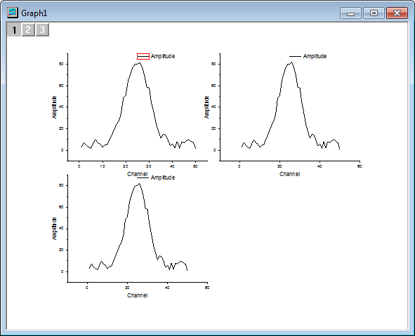
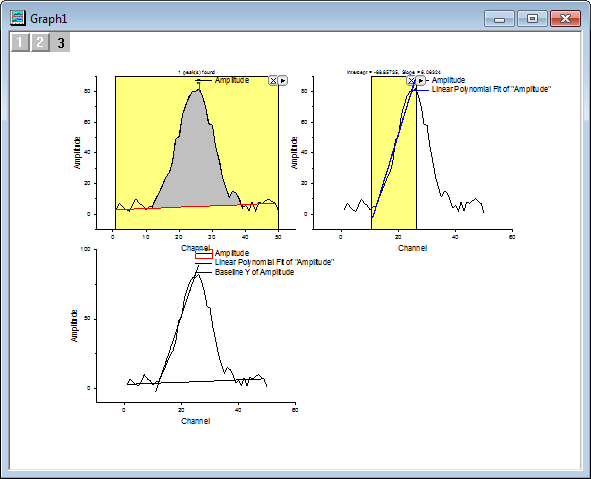

Mehrere Minitools verwenden
Using-Multiple-Gadgets
Zusammenfassung
Sie können mehrere Minitools kombinieren, um bestimmte Ziele zu erreichen. Um zu verhindern, dass sich mehrere Minitoolfenster auf derselben Zeichnung überschneiden, können Sie sie in verschiedenen Layern anordnen und auf diese Weise ein Layout erstellen, das sie auf verschiedenen Ebenen anzeigt. Die Ergebnisse aller anderen Minitools können am Ende zu dem letzten Minitoolfenster hinzugefügt und mit jeder neuen Ausgabe aktualisiert werden. In diesem Tutorial wird an einem Beispiel veranschaulicht, wie Sie die Verwendung der Minitools Peakanalyse, Quick Fit und Kurvenschnittpunkte kombinieren können, um die Kurvenschnittpunkte zwischen der Basislinie und der Steigung einer Kurve zu suchen.
Origin-Version mind. erforderlich: Origin 2016 SR0
Was Sie lernen werden
Dieses Tutorial zeigt Ihnen:
- gleichzeitig mehrere Minitools verwenden, um die gleichen Daten zu analysieren.
- mit einem Minitool analysierte Ergebnisse auf einem spezifischen Diagramm ausgeben und diese auf einem aktuellen Stand halten.
- den Kurvenschnittpunkt der Basislinie mit der linearen Anpassung einer Kurve suchen.
Ein Layout für mehrere Minitoolfenster erstellen
- Öffnen Sie eine neue Arbeitsmappe und importieren Sie die Datei \Samples\Curve Fitting\Gaussian.dat.
- Sie werden, wie unten zu sehen, ein Diagramm mit mehreren Layern, die jeweils die gleichen Daten beinhalten, vorbereiten, um die Überschneidung der Minitools in einem Diagramm zu verhindern.
- Markieren Sie die zweite Spalte und wählen Sie im Menü Zeichnen: Mehrere Kurven: 4-fach, um ein Diagramm mit vier Feldern zu erstellen.
| Hinweis: Um die Erklärung der folgenden Schritte deutlicher zu machen, wurde die obige Abbildung blau beschriftet, damit Sie die Layer im Diagramm besser unterscheiden können. |
- Gehen Sie zurück zur Arbeitsmappe, wählen Sie die Spalte Amplitude und positionieren Sie den Cursor am Rand der Spalte, bis der Cursor folgendermaßen angezeigt wird:
 . Ziehen Sie dann die Spalte per Drag&Drop in Layer 2 auf der Diagrammseite und klicken Sie auf OK, um den angezeigten Dialog zu schließen. Tun Sie dasselbe noch mal, um dieses Mal die Zeichnung in Layer 3 hinzuzufügen, und klicken Sie dann in den Bereich rechts unten, um den nicht benötigten Layer 4 zu markieren und ihn mit der Taste Entfernen auf der Tastatur zu löschen
. Ziehen Sie dann die Spalte per Drag&Drop in Layer 2 auf der Diagrammseite und klicken Sie auf OK, um den angezeigten Dialog zu schließen. Tun Sie dasselbe noch mal, um dieses Mal die Zeichnung in Layer 3 hinzuzufügen, und klicken Sie dann in den Bereich rechts unten, um den nicht benötigten Layer 4 zu markieren und ihn mit der Taste Entfernen auf der Tastatur zu löschen

Die Basislinie mit Hilfe des Minitools Peakanalyse suchen
- Wählen Sie Minitools: Peakanalyse im Origin-Menü bei aktivem Layer 1, um den Dialog Data Exploration:addtool_quickpeaks aufzurufen. Nach der Linienform dieser Kurve bietet sich die Spline-Verbindung als bessere Wahl für die Anpassung der Basislinie an. Dazu gehen Sie zur Registerkarte Basislinie und wählen die Option Spline in der Auswahlliste Verbindungsmethode, um die Ankerpunkte mit der Spline-Methode zu verbinden.
- Da keine neuen Spalten im Quellblatt hinzugefügt werden sollen, um die Basisliniendaten von jeder neuen Ausgabe zu speichern, können Sie das Ergebnis in einer neuen Arbeitsmappe speichern. Die neu erzeugten Basisliniendaten ersetzen dann stattdessen die vorhandenen Daten. Dazu gehen Sie zur Registerkarte Ausgabe in, deaktivieren Sie das Kontrollkästchen An Arbeitsblatt anhängen und aktivieren das Kontrollkästchen Basislinie in Arbeitsblatt ausgeben, um die Basisliniendaten in einer neuen Mappe QkPeak mit dem Blattnamen Baseline auszugeben.
- Klicken Sie auf OK, um den Dialog zu schließen. Positionieren Sie den Mauscursor am Rand des ROI-Felds der grafischen Datenauswahl. Sobald der Cursor sich in einen Doppelpfeil verwandelt, können Sie das Feld nach Wunsch in der Größe verändern.

- Klicken Sie auf die dreieckige Schaltfläche
 in der oberen rechten Ecke der grafischen Datenauswahl, um das Ausklappmenü zu öffnen und Neue Ausgabe (O) zu wählen.
in der oberen rechten Ecke der grafischen Datenauswahl, um das Ausklappmenü zu öffnen und Neue Ausgabe (O) zu wählen.
Mit Hilfe des Minitools Quick Fit die lineare Anpassung der Kurve suchen
- Aktivieren Sie den zweiten Layer, indem Sie entweder auf das Layersymbol klicken
 , das sich in der linken oberen Ecke des Diagramms befindet, oder direkt auf den Zeichnungsbereich des oberen rechten Feldes.
, das sich in der linken oberen Ecke des Diagramms befindet, oder direkt auf den Zeichnungsbereich des oberen rechten Feldes.
- Wählen Sie Minitools: Quick Fit: Linear(System) im Origin-Menü, um die grafische Datenauswahl (ROI) von Quick Fit aufzurufen, und passen Sie Position und Bereich des angezeigten ROI-Felds so an, dass eine lineare Anpassung über die linke Hälfte der Peakumhüllung durchgeführt wird.

- Klicken Sie auf die dreieckige Schaltfläche in der oberen rechten Ecke der grafischen Datenauswahl, um das Ausklappmenü zu öffnen und die Option Einstellungen zu wählen. Im Dialog Quick Fit Einstellungen legen Sie die Einstellungen benutzerdefiniert fest.
- Da Sie keine weitere unnötige Ausgabe zu dieser linearen Anpassung brauchen, können Sie zur Registerkarte Beschriftungsfeld wechseln und das Kontrollkästchen Beschriftungsfeld zum Diagramm hinzufügen deaktivieren.
- Zu dem gleichen Zweck - Verhindern der Ausgabe des Zusammenfassungsberichts - können Sie auf der Registerkarte Bericht die Option Kein in der Auswahlliste Ausgabe in wählen. Klicken Sie auf OK, um den Dialog zu schließen.
- Verwenden Sie erneut die dreieckige Schaltfläche oben rechts im ROI-Feld und wählen Sie Neue Ausgabe (O), um linear angepasste Ergebnisse in das Arbeitsblatt auszugeben.
Mit Hilfe des Minitools Kurvenschnittpunkte den Kurvenschnittpunkt suchen
- Bevor Sie das Minitool Kurvenschnittpunkte anwenden, besteht der erste Schritt darin, die angepasste Basislinie und die linear angepasste Linie aus den beiden letzten Minitools zu der dritten Zeichnung hinzuzufügen. Dazu klicken Sie auf das Layersymbol
 oben links, um Layer 3 zu aktivieren. Klicken Sie mit der rechten Maustaste auf das Layersymbol und wählen Sie Inhalt Layer, um das Fenster Layerinhalt - Layer 3 aufzurufen. Markieren Sie die Daten mit den Langnamen QuickFit Y1 sowie Baseline Y of Amplitude und fügen Sie sie mit Hilfe des nach rechts zeigenden Pfeils zum rechten Bedienfeld hinzu.
oben links, um Layer 3 zu aktivieren. Klicken Sie mit der rechten Maustaste auf das Layersymbol und wählen Sie Inhalt Layer, um das Fenster Layerinhalt - Layer 3 aufzurufen. Markieren Sie die Daten mit den Langnamen QuickFit Y1 sowie Baseline Y of Amplitude und fügen Sie sie mit Hilfe des nach rechts zeigenden Pfeils zum rechten Bedienfeld hinzu.
- Klicken Sie auf OK, um das Fenster zu schließen. Die angepasste Basislinie und die lineare Linie werden im dritten Layer angezeigt.

- Wählen Sie Minitools: Kurvenschnittpunkte im Origin-Menü bei aktivem Layer 3, um den Dialog Data Exploration:addtool_curve_intersect aufzurufen. Klicken Sie auf OK, um den Dialog zu schließen. Die grafische Datenauswahl ROI des Minitools Kurvenschnittpunkte wird aufgerufen.
- Positionieren Sie das ROI-Feld und verändern Sie seine Größe, so dass der Schnittpunkt zwischen Basislinie und Steigung innerhalb des Feldes liegt. Um andere Kurvenschnittpunkte mit der ursprünglichen Kurve auszuschließen, verwenden Sie die dreieckige Schaltfläche oben rechts in der grafischen Datenauswahl und deaktivieren Sie Plot(1) Amplitude im Kontextmenü von Daten ändern.
- Verwenden Sie erneut die dreieckige Schaltfläche oben rechts im ROI-Feld und wählen Sie Neue Ausgabe (O), um das Ergebnis der Kurvenschnittpunkte zwischen Basislinie und linear angepasste Linie auszugeben.
Die Ausgabe aktualisieren
- Klicken Sie auf das Layersymbol , um Layer 1 zu aktivieren. Positionieren Sie das ROI-Feld der Peakanalyse neu, um eine neue Basislinie zu erstellen. Gehen Sie zu der dreieckigen Schaltfläche oben rechts im ROI-Feld und wählen Sie Neue Ausgabe (O), um die neu erzeugte Basislinie auszugeben.
- Klicken Sie auf das Layersymbol , um Layer 2 zu aktivieren. Positionieren Sie das ROI-Feld des Quick Fit auf der anderen Seite der Kurve, so dass eine neue lineare Anpassungslinie erzeugt wird. Klicken Sie dann auf die dreieckige Schaltfläche oben rechts von der grafischen Datenauswahl und wählen Sie Letzte Ausgabe aktualisieren, um das Ergebnis der linear angepassten Linie auszugeben.
- Klicken Sie auf das Layersymbol , um Layer 3 zu aktivieren. Positionieren Sie das ROI-Feld der Kurvenschnittpunkte neu, um die Kurvenschnittpunkte zwischen der neu erzeugten Basislinie und der linear angepassten Linie innerhalb des Felds zu ermitteln. Gehen Sie zu der dreieckigen Schaltfläche oben rechts im ROI-Feld und wählen Sie Neue Ausgabe (O), um das Ergebnis des neuen Kurvenschnittpunkts auszugeben.